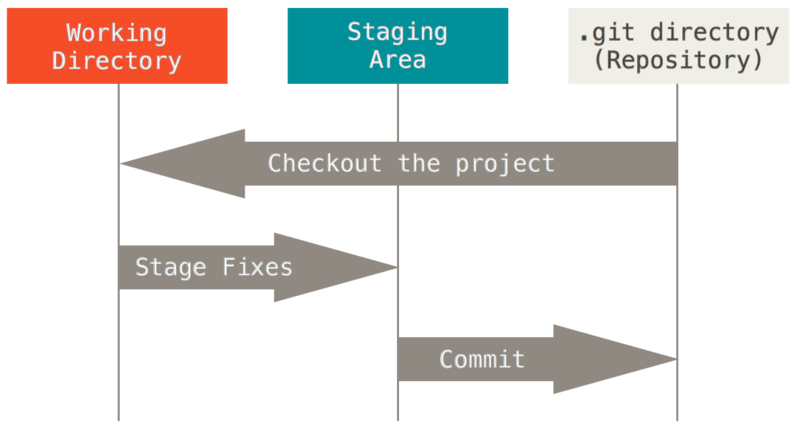

Git version control system
Mon 11 December 2017 by Michael OlbergThe Abomination
foo.txt
foo1.txt
foo1_john.txt
foo2_jane_feb12.txt
foo2_jane_feb12_with_additional_comments_by_john.txt
Please. don't. do. this!
History
The competition
rcsrevision control systemcvsconcurrent versions systemsvnsubversionhgmercurial
... and the winner is:
gitdeveloped in 2005 by Linus Torvalds, used for the development of the Linux kernel- excellent documentation (including a whole book) at the git home page
Before you start
Required configuration, will be written to file .gitconfig in your home directory:
git config --global user.name "John Doe"
git config --global user.email johndoe@example.com
The Git work flow

Local repositories
At the observatory, we currently have two setups which you are welcome to use as a remote repository for projects you don't want world readable (else github is an excellent choice).
gitserver onnain.oso.chalmers.se. I need to manually setup the repository for you and will need your public(!) ssh key to allow access. No web interface.gitlabserver onskjold.oso.chalmers.se. Again, I will need your public ssh key to allow access, but you administer the repository via a web interface.